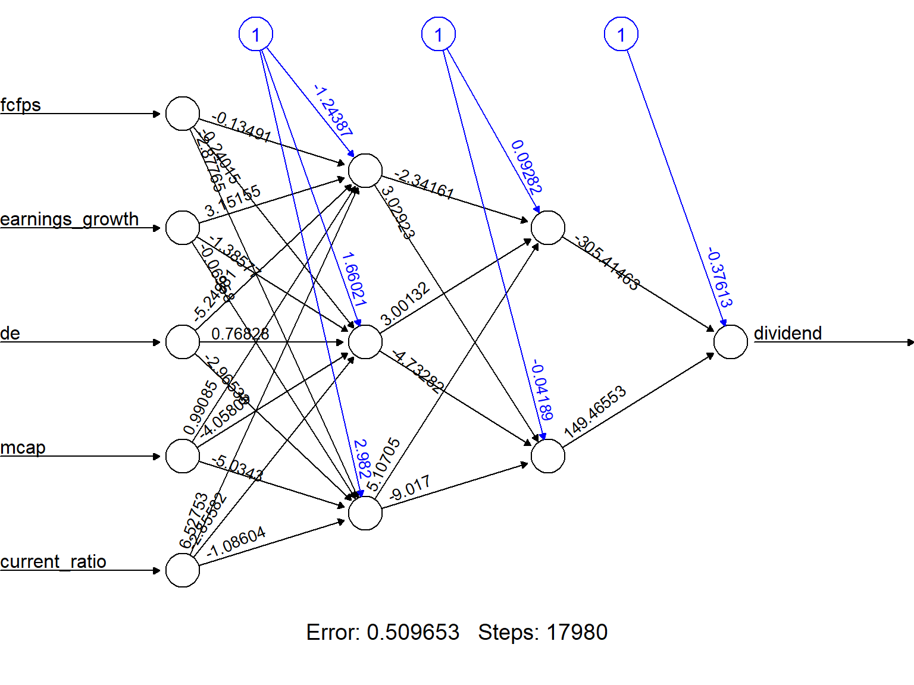
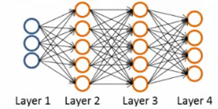

options(width=100)
if(!require("knitr")) install.packages("knitr")
library("knitr")
#getOption("width")
knitr::opts_chunk$set(comment=NA,echo = TRUE, cache=TRUE)Introduction to Deep Neural Networks
Introduction to Deep Neural Networks
Historical Background and Key Milestones
Today, in April 2023, our world is convulsed by the explosion of Artificial Intelligence.
Although it has been growing steadily, it has probably been in the last months (weeks), since ChatGPT has arrived, that everybody has an opinion, or a fear on the topic.
 Trends In 2023, Bernard Marr")
AI engines use statistical learning methods, such as machine learning algorithms, to make predictions based on large amounts of data.
Prediction is a fundamental capability of AI and is used in a wide range of applications, from recommendation systems to natural language processing to image recognition.
However, it is important to keep in mind that AI has far-reaching implications beyond its predictive capabilities, including ethical, social, and technological considerations that must be taken into account when developing and deploying AI systems.
The rise of Deep learning
Deep learning is a highly successful model in the field of AI, which has powered numerous applications in various domains. It has shown remarkable performance in tasks such as image recognition, natural language processing, and speech recognition.
Deep learning extends the basic principles of artificial neural networks by introducing more complex architectures and algorithms and, at the same time, by enabling machines to learn from large datasets by automatically identifying relevant patterns and features without explicit programming.
One key advantage of deep learning over traditional machine learning algorithms is its ability to handle high-dimensional and unstructured data such as images, videos, and audio.
The early history of artificial [neural networks]/intelligence


The origins of AI, and as such of DL can be traced almost one century backwards. While it is an interesting, or even fascinating, history wee don’t go into it (see a summary in A Quick History of AI, ML and DL
We can see there however, several hints worth to account for because we will go through them to understand how a deep neural network works. These are:
The Perceptron and the first Artificial Neural Network where the basic building block was introduced.
The Multilayered perceptron and back-propagation where complex architectures were suggested to improve the capabilities.
Deep Neural Networks, with many hidden layers, and auto-tunability capabilities.
In short, there has been an mathematical and a technological evolution that at some point has allowed to meet with
The required theoretical background (DNN)
The required computational capabilities (GPU, HPC)
The required quantity of data (Big Data, Images, Social Networks)
This has resulted in making artificial intelligence widely accessible to businesses, researchers, and the general public.
 Source: Alex Amini’s ‘MIT Introduction to Deep Learning’ course (introtodeeplearning.com)
Source: Alex Amini’s ‘MIT Introduction to Deep Learning’ course (introtodeeplearning.com)
Success stories such as
the development of self-driving cars,
the use of AI in medical diagnosis, and
the creation of personalized recommendations in online shopping
have also contributed to the widespread adoption of AI.
Comparison with Traditional Machine Learning
A reasonable question is: “How are Artificial Intelligence, Machine Learning and Deep learning related”?
A standard answer can be found in the image below that has a myriad variations:
knitr::include_graphics("images/AI-ML-DL-1.jpg")
We can keep, for instance, the followin three definitions, which also have many variants:
Artificial intelligence is the ability of a computer to perform tasks commonly associated with intelligent beings.
Machine learning is the study of algorithms that learn from examples and experience instead of relying on hard-coded rules and make predictions on new data
Deep learning is a sub-field of machine learning focusing on learning data representations as successive successive layers of increasingly meaningful representations.
knitr::include_graphics("images/ML_vs_DL-2.png")
We will be coming back to the difference between ML and DL, but two strengths of DL that differentiate it from ML ,:
- DNN combine feature extraction and classification in a way that does not require (or dramatically decreases) human intervention.
- The power of DNN requires in its ability to improve with data availability, without seemingly reaching plateaus as ML.

Deep learning is having a strong impact
Near-human-level image classification
Near-human-level speech transcription
Near-human-level handwriting transcription
Dramatically improved machine translation
Dramatically improved text-to-speech conversion
Digital assistants such as Google Assistant and Amazon Alexa
Near-human-level autonomous driving
Improved ad targeting, as used by Google, Baidu, or Bing
Improved search results on the web
Ability to answer natural language questions
Superhuman Go playing
According to (chollet2022?) … “we shouldn’t believe the short-term hype, but should believe in the long-term vision. It may take a while for AI to be deployed to its true potential—a potential the full extent of which no one has yet dared to dream—but AI is coming, and it will transform our world in a fantastic way”.
Once the introduction is ready we con move onto the building blocks of neural networks, perceptrons.
Artificial Neural Networks
The perceptron, the building block
The perceptron, was introduced by Rosenblatt (one version of the perceptron at least), as a mathematical model that might emulate a neuron.
The idea is: how can we produce a model that, given some inputs, and an appropriate set of examples, learn to produce the desired output?
The first computational model of a neuron was proposed by Warren McCullough (neuroscientist) and Walter Pitts (logician) in 1943.

It may be divided into 2 parts. The first part, \(g\),takes an input (ahem dendrite ahem), performs an aggregation and based on the aggregated value the second part, \(f\), makes a decision. See the source of this picture for an illustration on how this can be used to emulate logical operations such as AND, OR or NOT, but not XOR.
This first attempt to emulate neurons succeeded but with limitations:
What about non-Boolean (say, real) inputs?
What if all inputs are not equal?
What if we want to assign more importance to some inputs?
What about functions which are not linearly separable? Say XOR function
To overcome these limitations Frank Rosenblatt, an American psychologist, proposed the classical perception model, the artificial neuron, in 1958. It is more generalized computational model than the McCullough-Pitts neuron where weights and thresholds can be learnt over time.
The perceptron proposed by Rosenblatt this is very similar to an M-P neuron but we take a weighted sum of the inputs and set the output as one only when the sum is more than an arbitrary threshold (theta).

Additionally, instead of hand coding the thresholding parameter \(\theta\), we add it as one of the inputs, with the weight \(w_0=-\theta\) like shown below, which makes it learnable.

Now, while this is an improvement (because both the weights and the threshold can be learned and the inputs can be real values) there is still a drawback in that a single perceptron can only be used to implement linearly separable functions.
Artificial Neural Networks improve on this by introducing Activation Functions which, eventually, can be non-linear.
Neurons and Activation Functions
An activation function is a function that is added into an artificial neuron in order to help it learn complex patterns in the data.
How come biological and artificial neurons come to compare?
Biological neurons are specialized cells in the central nervous system that transmit electrical and chemical signals to communicate with each other and the rest of the body.
On the other hand, artificial neurons are mathematical models used in neural networks to process information.
In both biological and artificial neurons, the activation function is what is responsible for deciding whether the neuron activates or not based on the input it receives.
- In the case of a biological neuron, the activation function is based on the release of neurotransmitters, which are chemical substances that transmit signals between nerve cells. When the electrical signal reaching the neuron exceeds a certain threshold, the neuron releases neurotransmitters, which are received by other neurons or cells in the body to continue the communication process.
- On the other hand, in an artificial neuron, the activation function is a mathematical function applied to the neuron’s input to produce an output. Like in the biological neuron, this activation function decides whether the neuron activates or not based on the input it receives.
knitr::include_graphics("images/ActivationFunction0.png")
Read more here about activation functions.
With all these inputs in mind we can now define an Artificial Neuron as a computational unit that - takes as input \(x=(x_0,x_1,x_2,x_3)\) (\(x_0\) = +1, called bias), and - outputs \(h_{\theta}(x) = f(\theta^\intercal x) = f(\sum_i \theta_ix_i)\), - where \(f:\mathbb{R}\mapsto \mathbb{R}\) is called the activation function.
The goal of the activation function is to provide the Neuron with the capability of producing the required outputs.
For instance, if the output has to be a probability, the activation function will only produce values between 0 and 1.
With this idea in mind activation functions are chosen from a set of pre-defined functions:
- the sigmoid function:
\[ f(z)=\frac{1}{1+e^{-z}} \]
- the hyperbolic tangent, or
tanh, function:
\[ f(z)=\frac{e^{z}-e^{-z}}{e^{z}+e^{-z}} \]
The tanh(z) function is a re-scaled version of the sigmoid, and its output range is \([-1,1]\) instead of \([0,1]\).
Two useful properties to recall are that: - If \(f(z)=1/(1+e^z)\) is the sigmoid function, then its derivative is given by \(f'(z)=f(z)(1-f(z))\).
Similarly, if \(f\) is the
tanhfunction, then its derivative is given by \(f'(z)=1-(f(z))^2\).In modern neural networks, the default recommendation is to use the rectified linear unit or ReLU defined by the activation function \(f(z)=\max\{0,z\}\).
This function remains very close to a linear one, in the sense that is a piece-wise linear function with two linear pieces.
Because rectified linear units are nearly linear, they preserve many of the properties that make linear models easy to optimize with gradient based methods.
They also preserve many of the properties that make linear models generalize well.
 .
.
Putting altogether we have the following schematic representation of an artificial neuron where \(\Sigma=\left\langle w_{j}, x\right\rangle+ b_{j}\) and \(\left\langle w_{j}, x\right\rangle\) represents the dot product between vectors \(w\) and \(x\).

Multilayer perceptrons
A multilayer perceptron (or Artificial neural network) is a structure composed by several hidden layers of neurons where the output of a neuron of a layer becomes the input of a neuron of the next layer.
Moreover, the output of a neuron can also be the input of a neuron of the same layer or of neuron of previous layers (this is the case for recurrent neural networks). On last layer, called output layer, we may apply a different activation function as for the hidden layers depending on the type of problems we have at hand : regression or classification.
The Figure below represents a neural network with three input variables, one output variable, and two hidden layers.
knitr::include_graphics("images/MultiLayer1.png")
Multilayers perceptrons have a basic architecture since each unit (or neuron) of a layer is linked to all the units of the next layer but has no link with the neurons of the same layer.
The parameters of the architecture are:
- the number of hidden layers and
- the number of neurons in each layer.
The activation functions are also to choose by the user. For the output layer, as mentioned previously, the activation function is generally different from the one used on the hidden layers. For example:.
- For regression, we apply no activation function on the output layer.
- For binary classification, the output gives a prediction of \(\mathbb{P}(Y=1 / X)\) since this value is in \([0,1]\) and the sigmoid activation function is generally considered.
- For multi-class classification, the output layer contains one neuron per class (i), giving a prediction of \(\mathbb{P}(Y=i / X)\). The sum of all these values has to be equal to 1. The sum of all these values has to be equal to 1.
- A common choice for multi-class ANN is the soft-max activation function: \[ \operatorname{softmax}(z)_{i}=\frac{\exp \left(z_{i}\right)}{\sum_{j} \exp \left(z_{j}\right)} \]
An example
In this example we train and use a “shallow neural network”, called this way in contrast with “deep neural networks”.
We will use the neuralnet R package, which is not intended to work with deep neural networks, to build a simple neural network to predict if a type of stock pays dividends or not.
if (!require(neuralnet))
install.packages("neuralnet", dep=TRUE)
if (!require(caret))
install.packages("caret", dep=TRUE)The data for the example are the dividendinfo.csv dataset, available from: https://github.com/MGCodesandStats/datasets
mydata <- read.csv("https://raw.githubusercontent.com/MGCodesandStats/datasets/master/dividendinfo.csv")
str(mydata)'data.frame': 200 obs. of 6 variables:
$ dividend : int 0 1 1 0 1 1 1 0 1 1 ...
$ fcfps : num 2.75 4.96 2.78 0.43 2.94 3.9 1.09 2.32 2.5 4.46 ...
$ earnings_growth: num -19.25 0.83 1.09 12.97 2.44 ...
$ de : num 1.11 1.09 0.19 1.7 1.83 0.46 2.32 3.34 3.15 3.33 ...
$ mcap : int 545 630 562 388 684 621 656 351 658 330 ...
$ current_ratio : num 0.924 1.469 1.976 1.942 2.487 ...Data pre-processing
One of the most important procedures when forming a neural network is data normalization. This involves adjusting the data to a common scale so as to accurately compare predicted and actual values. Failure to normalize the data will typically result in the prediction value remaining the same across all observations, regardless of the input values.
We can do this in two ways in R:
- Scale the data frame automatically using the scale function in R
- Transform the data using a max-min normalization technique
In this example We implement the max-min normalization technique.
See this link for further details on how to use the normalization function.
normalize <- function(x) {
return ((x - min(x)) / (max(x) - min(x)))
}
normData <- as.data.frame(lapply(mydata, normalize))As usually, the dataset is separated in a training and a test set. The training set contains a random selection with and (arbitrary) 66% of the observations.
perc2Train <- 2/3
ssize <- nrow(normData)
set.seed(12345)
data_rows <- floor(perc2Train *ssize)
train_indices <- sample(c(1:ssize), data_rows)
trainset <- normData[train_indices,]
testset <- normData[-train_indices,]The trainset set will be used to train the network and the testset set one will be used to evaluate it.
Training a neural network
Setting the parameters of a neural network requires experience and understanding of their meaning, and even so, changes in the parameters can lead to similar results.
We create a simple NN with two hidden layers, with 3 and 2 neurons respectively. This is specified in the hidden parameter. For other parameters see the package help.
# Neural Network
library(neuralnet)
nn <- neuralnet(dividend ~ fcfps + earnings_growth + de + mcap + current_ratio,
data=trainset,
hidden=c(3,2),
linear.output=FALSE,
threshold=0.01)The output of the procedure is a neural network with estimated weights.
This can be seen with a plot function (including the rep argument).
plot(nn, rep = "best")
The object nncontains information the weights and the results although it is not particularly clear or useful.
summary(nn) Length Class Mode
call 6 -none- call
response 133 -none- numeric
covariate 665 -none- numeric
model.list 2 -none- list
err.fct 1 -none- function
act.fct 1 -none- function
linear.output 1 -none- logical
data 6 data.frame list
exclude 0 -none- NULL
net.result 1 -none- list
weights 1 -none- list
generalized.weights 1 -none- list
startweights 1 -none- list
result.matrix 32 -none- numeric nn$result.matrix [,1]
error 5.096531e-01
reached.threshold 9.874263e-03
steps 1.798000e+04
Intercept.to.1layhid1 -1.243872e+00
fcfps.to.1layhid1 -1.349137e-01
earnings_growth.to.1layhid1 3.151554e+00
de.to.1layhid1 -5.249806e+00
mcap.to.1layhid1 9.908495e-01
current_ratio.to.1layhid1 6.527535e+00
Intercept.to.1layhid2 1.660208e+00
fcfps.to.1layhid2 -2.401517e-01
earnings_growth.to.1layhid2 -1.385771e+00
de.to.1layhid2 7.682849e-01
mcap.to.1layhid2 -4.058053e+00
current_ratio.to.1layhid2 -2.855816e+00
Intercept.to.1layhid3 2.982002e+00
fcfps.to.1layhid3 -2.877651e+00
earnings_growth.to.1layhid3 -6.957763e-02
de.to.1layhid3 -2.965334e+00
mcap.to.1layhid3 -5.034300e+00
current_ratio.to.1layhid3 -1.086037e+00
Intercept.to.2layhid1 9.282087e-02
1layhid1.to.2layhid1 -2.341614e+00
1layhid2.to.2layhid1 3.001315e+00
1layhid3.to.2layhid1 5.107051e+00
Intercept.to.2layhid2 -4.188729e-02
1layhid1.to.2layhid2 3.029232e+00
1layhid2.to.2layhid2 -4.732821e+00
1layhid3.to.2layhid2 -9.017001e+00
Intercept.to.dividend -3.761263e-01
2layhid1.to.dividend -3.054146e+02
2layhid2.to.dividend 1.494655e+02Model evaluation
A prediction for each value in the testset dataset can be built with the compute function.
#Test the resulting output
temp_test <- subset(testset, select =
c("fcfps","earnings_growth",
"de", "mcap", "current_ratio"))
head(temp_test) fcfps earnings_growth de mcap current_ratio
9 0.4929006 0.52417860 0.7862595 0.79741379 0.662994637
19 0.8722110 0.89705139 0.5190840 0.31465517 0.631284474
22 0.0811359 0.68272957 0.4554707 0.05747126 0.000785556
26 0.4077079 0.07649537 0.6310433 0.70977011 0.379642293
27 0.4279919 0.70362258 0.1882952 0.30603448 0.628283435
29 0.3509128 0.74203875 0.6030534 0.53017241 0.543404499nn.results <- compute(nn, temp_test)
results <- data.frame(actual =
testset$dividend,
prediction = nn.results$net.result)
head(results) actual prediction
9 1 1.000000e+00
19 1 1.000000e+00
22 0 5.442517e-133
26 0 6.801894e-35
27 1 4.548179e-10
29 1 1.000000e+00A confusion matrix can be built to evaluate the predictive ability of the network:
roundedresults<-sapply(results,round,digits=0)
roundedresultsdf=data.frame(roundedresults)
attach(roundedresultsdf)
confMat<- caret::confusionMatrix(table(actual, prediction))
confMatConfusion Matrix and Statistics
prediction
actual 0 1
0 34 2
1 6 25
Accuracy : 0.8806
95% CI : (0.7782, 0.947)
No Information Rate : 0.597
P-Value [Acc > NIR] : 3.405e-07
Kappa : 0.7577
Mcnemar's Test P-Value : 0.2888
Sensitivity : 0.8500
Specificity : 0.9259
Pos Pred Value : 0.9444
Neg Pred Value : 0.8065
Prevalence : 0.5970
Detection Rate : 0.5075
Detection Prevalence : 0.5373
Balanced Accuracy : 0.8880
'Positive' Class : 0
Some mathematics behind ANN
An ANN is a predictive model whose properties and behaviour can be mathematically characterized.
In practice this means:
- The ANN acts by composing a series of linear and non-linear (activation) functions.
- These are characterized by their weights and biases, that need to be learnt.
Training the network is done by
- Selecting an appropriate (convex) loss function,
- Finding those weights that minimize a the total cost function (avg. loss).
This is usually done using some iterative optimization procedure such as gradient descent.
This requires evaluating derivatives in a huge number of points.
- Such high number may be reduced by Stochastic Gradient Descent.
- The evaluation of derivatives is simplified thanks to Backpropagation.
A guiding example
We will use a concrete model to explain the concepts, which can be easily generalized to more neurons and layers.
Consider the following simple ANN:

- The circles labelled +1 are called bias units, and correspond to the intercept, here named bias term.
- The leftmost layer of the network is called the input layer.
- The rightmost layer is the output layer (which, in this example, has only one node).
- The middle layer(s) is(are) called the hidden layer(s), because its values are not observed in the training set.
So our example network has:
- The input layer with 3 input units (not counting the bias unit),
- 1 hidden layer with 3 hidden units, and
- The output layer with 1 output unit.
A logistic regression ANN
This ANN canseen as a device to perform a logistic regression:
From input layer to layer 2: non-linear transformation \(\rightarrow\) new set of complex features.
From layer 2 to output layer use a sigmoid activation function to produce the following output from the set of complex features.
\[ \mbox{The output is: }h_{\theta}(x)=\frac{1}{1+e^{-\theta^\intercal x}} \]
Recall that, the logistic regression model is:
\[ \log\frac{p(Y=1|x)}{1-p(Y=1|x)}=\theta^\intercal x \]
Isolating \(p(Y=1|x)\) and taking logs in both sides, we have:
\[ \frac{p(Y=1|x)}{1-p(Y=1|x)}=e^{\theta^\intercal x} \]
Thus \[ p(Y=1|x)=\frac{e^{\theta^\intercal x}}{1+e^{\theta^\intercal x}}=\frac{1}{1+e^{-\theta^\intercal x}} \]
That is, when the activation function of the output node is the sigmoid activation function, the output coincides with a logistic regression on complex features
- And, \(h_{\theta}(x)\), the output of the ANN, estimates \(p(Y=1|x)\).
Parametrizing an ANN
Let \(n_l\) denote the number of layers in our network, thus \(n_l=3\) in our example.
Label layer \(l\) as \(L_l\), so layer \(L_1\) is the input layer, and layer \(L_{n_l}=L_3\) the output layer.
Our neural network has parameters: \(\Theta=(\Theta^{(1)},\Theta^{(2)})\), where we will write \(\theta^{(l)}_{ij}\) to denote the parameter (or weight) associated with the connection between unit \(j\) in layer \(l\), and unit \(i\) in layer \(l+1\).
Thus, in our example, we have:
- \(\Theta^{(1)}\in\mathbb{R}^{3\times 4}\), and
- \(\Theta^{(2)}\in\mathbb{R}^{1\times 4}\).
Note that bias units don’t have inputs or connections going into them, since they always output the value +1.
We also let \(s_l\) denote the number of nodes in layer \(l\) (not counting the bias unit).
Now, write \(a^{(l)}_i\) to denote the activation (meaning output value) of unit \(i\) in layer \(l\).
For \(l=1\), we also use \(a^{(1)}_i=x_i\) to denote the \(i\)-th input.
Given a fixed setting of the parameters \(\Theta\), our neural network defines a model \(h_{\Theta}(x)\) that outputs a real number.
We can now see how these weights are used to produce the output:
given by: \[\begin{eqnarray} a_1^{(2)}&=&f(\theta_{10}^{(1)}+\theta_{11}^{(1)}x_1+\theta_{12}^{(1)}x_2+\theta_{13}^{(1)}x_3)\\ a_2^{(2)}&=&f(\theta_{20}^{(1)}+\theta_{21}^{(1)}x_1+\theta_{22}^{(1)}x_2+\theta_{23}^{(1)}x_3)\\ a_3^{(2)}&=&f(\theta_{30}^{(1)}+\theta_{31}^{(1)}x_1+\theta_{32}^{(1)}x_2+\theta_{33}^{(1)}x_3)\\ h_{\Theta}(x)&=&a_1^{(3)}=f(\theta_{10}^{(2)}+\theta_{11}^{(2)}a_1^{(2)}+\theta_{12}^{(2)}a_2^{(2)}+\theta_{13}^{(2)}a_3^{(2)}) \end{eqnarray}\]
Now, letting \(z_i^{(l)}\) denote the total weighted sum of inputs to unit \(i\) in layer \(l\), including the bias term \[ z_i^{(2)}=\theta_{i0}^{(1)}+\theta_{i1}^{(1)}x_1+\theta_{i2}^{(1)}x_2+\theta_{i3}^{(1)}x_3, \] the output becomes: \(a_i^{(l)}=f(z_i^{(l)})\).
Compacting notation
Note that this easily lends itself to a more compact notation.
Extending the activation function \(f(\cdot)\) to apply to vectors in an element-wise fashion: \[ f([z_1,z_2,z_3]) = [f(z_1), f(z_2),f(z_3)], \]
then we can write the previous equations more compactly as:
\[\begin{eqnarray} z^{(2)}&=&\Theta^{(1)}x\nonumber\\ a^{(2)}&=&f(z^{(2)})\nonumber\\ z^{(3)}&=&\Theta^{(2)}a^{(2)}\nonumber\\ h_{\Theta}(x)&=&a^{(3)}=f(z^{(3)})\nonumber \end{eqnarray}\]More generally, recalling that we also use \(a^{(1)}=x\) to also denote the values from the input layer,
then given layer \(l\)’s activations \(a^{(l)}\), we can compute layer \(l+1\)’s activations \(a^{(l+1)}\) as:
This can be used to provide a matrix representation for the weighted sum of inputs of all neurons:
\[ z^{(l+1)}= \begin{bmatrix} z_1^{(l+1)}\\ z_2^{(l+1)}\\ \vdots\\ z_{s_{l+1}}^{(l)} \end{bmatrix}= \begin{bmatrix} \theta_{10}^{(l)}& \theta_{11}^{(l)}&\theta_{12}^{(l)}&...&\theta_{1s_{l}}^{(l)}&\\ \theta_{20}^{(l)}& \theta_{21}^{(l)}&\theta_{22}^{(l)}&...&\theta_{2s_{l}}^{(l)}&\\ \vdots & \vdots& \vdots & \vdots & \vdots\\ \theta_{s_{l+1}0}^{(l)}& \theta_{s_{l+1}1}^{(l)}&\theta_{s_{l+1}2}^{(l)}&...&\theta_{s_{l+1}s_{l}}^{(l)}&\\ \end{bmatrix} \cdot\begin{bmatrix} 1\\ a_1^{(l)}\\ a_2^{(l)}\\ \vdots\\ a_{s_l}^{(l)} \end{bmatrix} \]
So that, the activation is then:
\[ a^{(l+1)}= \begin{bmatrix} a_1^{(l+1)}\\ a_2^{(l+1)}\\ \vdots\\ a_{s_{l+1}}^{(l)} \end{bmatrix}=f(z^{(l+1)})=\begin{bmatrix} f(z_1^{(l+1)})\\ f(z_2^{(l+1)})\\ \vdots\\ f(z_{s_{l+1}}^{(l)}) \end{bmatrix} \]
Forward propagation
By organizing our parameters in matrices and using matrix-vector operations, we can take advantage of fast linear algebra routines to quickly perform calculations in our network.
This process is called forward propagation.
Multiple architectures for ANN
We have so far focused on a single hidden layer neural network of the example One can build neural networks with many distinct architectures (meaning patterns of connectivity between neurons), including ones with multiple hidden layers.
Feed Forward Neural networks
The most common choice is a \(n_l\)-layered network where layer 1 is the input layer, layer \(n_l\) is the output layer, and each layer \(l\) is densely connected to layer \(l+1\).
In this setting, to compute the output of the network, we can successively compute all the activations in layer \(L_2\), then layer \(L_3\), and so on, up to layer \(L_{nl}\) , using Equations (5-6). This is one example of a feed-forward neural network (FFNN), since the connectivity graph does not have any directed loops or cycles.
The number of output units
Neural networks can also have multiple output units.
For example, in (Fig. 4) we can see a network with two hidden layers layers \(L_2\) and \(L_3\) and four output units in layer \(L_4\), where bias of each layer were omitted.

To train this network, we would need training examples \((x^{(i)},y^{(i)})\) where \(y^{(i)}\in\mathbb{R}^4\). This sort of network is useful if there are multiple outputs that you’re interested in predicting.
For example, in a medical diagnosis application, the vector \(x\) might give the input features of a patient, and the different outputs \(y_i\)’s might indicate presence or absence of different diseases.
A loss function for optimization
In order to estimate the weights we will aim at minimizing an appropriate loss function.
A first idea may be to use squared error loss \[ l(h_\theta(x),y)=(y-\frac{1}{1+e^{-\theta^\intercal x}})^2 \]
However it happens to be that this is is not a convex problem which means that MSE is not appropriate.
Alternatively, we use the binary cross-entropy loss function : \[ l(h_\theta(x),y)=\big{\{}\begin{array}{ll} -\log h_\theta(x) & \textrm{if }y=1\\ -\log(1-h_\theta(x))& \textrm{if }y=0 \end{array} \]
It can be written compactly as:
\[ l(h_\theta(x),y)=-y\log h_\theta(x) - (1-y)\log(1-h_\theta(x)) \]
Using cross-entropy loss, the cost function is of the form: \[\begin{eqnarray*} J(\theta)=-\frac{1}{n}\big[\sum_{i=1}^n&&(y^{(i)}\log h_\theta(x^{(i)})+\\ &&(1-y^{(i)})\log(1-h_\theta(x^{(i)}))\big] \end{eqnarray*}\]
This is a convex optimization problem.
Better to work with a regularized version of the cost function (we don’t regularize the bias units)
Gradient descent
We saw in the previous section that training a network corresponds to choosing the parameters, that is, the weights and biases, that minimize the cost function.
The weights and biases take the form of matrices and vectors, but at this stage it is convenient to imagine them stored as a single vector that we call \(\theta\). Generally, we will suppose \(\theta\in\mathbb{R}^p\), and write the cost function as \(J(\theta)\) to emphasize its dependence on the parameters. So Cost \(J: \mathbb{R}^p\rightarrow \mathbb{R}\).

We now introduce a classical method in optimization that is often referred to as steepest descent or gradient descent. The method proceeds iteratively, computing a sequence of vectors in \(\mathbb{R}^p\) with the aim of converging to a vector that minimizes the cost function. Suppose that our current vector is \(\theta\). How should we choose a perturbation, \(\Delta\theta\), so that the next vector, \(\theta+\Delta\theta\), represents an improvement? If \(\Delta\theta\) is small, then ignoring terms of order \(||\Delta\theta||^2\), a Taylor series expansion gives
\[ J(\theta+\Delta\theta)\approx J(\theta)+\sum_{i=1}^p\frac{\partial J(\theta)}{\partial\theta_i}\Delta\theta_i \] Here \(\frac{\partial J(\theta)}{\partial\theta_i}\) denotes the partial derivative of the cost function with respect to the \(i\)-th weight. For convenience, we will let \(\nabla J(\theta)\in\mathbb{R}^p\) denote the vector of partial derivatives, known as the gradient, so that \[\begin{equation}\label{g1} \nabla J(\theta)=\big(\frac{\partial J(\theta)}{\partial\theta_1},...,\frac{\partial J(\theta)}{\partial\theta_p}\big)^\intercal \end{equation}\] Then, \[\begin{equation}\label{g2} J(\theta+\Delta\theta)\approx J(\theta)+\nabla J(\theta)^\intercal\Delta\theta \end{equation}\]
Our aim is to reduce the value of the cost function. The relation (\(\ref{g2}\)) motivates the idea of choosing \(\Delta\theta\) to make \(\nabla J(\theta)^\intercal\Delta\theta\) as negative as possible. We can address this problem via the Cauchy-Schwarz inequality, which states that for any \(f,g\in\mathbb{R}^p\), we have \(|f^\intercal g|\leq ||f||\cdot ||g||\). Moreover, the two sides are equal if and only if \(f\) and \(g\) are linearly dependent (meaning they are parallel).
So the most negative that \(f^\intercal g\) can be is \(-||f||\cdot||g||\), which happens when \(f=-g\). Hence we should choose \(\Delta\theta\) to lie in the direction of \(-\nabla J(\theta)\). Keeping in mind that (\(\ref{g2}\)) is an approximation that is relevant only for small \(\Delta\theta\), we will limit ourselves to a small step in that direction. This leads to the update \[\begin{equation}\label{g3} \theta \rightarrow \theta-\eta\nabla J(\theta) \end{equation}\]
Here \(\eta\) is small step size that, in this context, is known as the learning rate. This equation defines the steepest descent method. We choose an initial vector and iterate (\(\ref{g3}\)) until some stopping criterion has been met, or until the number of iterations has exceeded the computational budget.
Repeat:
\[ \theta_j=\theta_j-\eta\frac{\partial}{\partial\theta_j}J(\theta) \] \[ \qquad \textrm{ simultaneously update all }\qquad \theta_j \]
\(\eta\in (0,1]\) denotes the learning parameter.
We aim to minimize the cost function \[ \underset{\theta}{\textrm{min }}J(\theta) \]
In order to use gradient descent, we need to compute \(J(\theta)\) and the partial derivative terms \[ \frac{\partial}{\partial\theta_j}J(\theta) \]
Initialization
The input data have to be normalized to have approximately the same range. The biases can be initialized to 0. They also cannot be initialized with the same values, otherwise, all the neurons of a hidden layer would have the same behavior. Perhaps the only property known with complete certainty is that the initial parameters need to break symmetry between different units. We generally initialize the weights at random: the values \(\theta_{ij}^{(l)}\) are i.i.d. Uniform on \([-c,c]\) with possibly \(c= 1/\sqrt{N_l}\) where \(N_l\) is the size of the hidden layer \(l\). We also sometimes initialize the weights with a normal distribution \(N(0,0.01)\).
Stochastic Gradient
Algorithm for optimization the cost function. When we have a large number of parameters and a large number of training points, computing the gradient vector (\(\ref{g1}\)) at every iteration of the steepest descent method (\(\ref{g3}\)) can be prohibitively expensive because we have to sum across all training points (for instance in Big Data). A much cheaper alternative is to replace the mean of the individual gradients over all training points by the gradient at a single, randomly chosen, training point. This leads to the simplest form of what is called the stochastic gradient method. A single step may be summarized as
Notice we have included \(x^{(i)}\) in the notation of \(J(\theta;x^{(i)})\) to remark the dependence. In words, at each step, the stochastic gradient method uses one randomly chosen training point to represent the full training set. As the iteration proceeds, the method sees more training points. So there is some hope that this dramatic reduction in cost-per-iteration will be worthwhile overall. We note that, even for very small \(\eta\), the update (\(\ref{g4}\)) is not guaranteed to reduce the overall cost function we have traded the mean for a single sample. Hence, although the phrase stochastic gradient descent is widely used, we prefer to use stochastic gradient.
The version of the stochastic gradient method that we introduced in (\(\ref{g4}\)) is the simplest from a large range of possibilities. In particular, the index \(i\) in (\(\ref{g4}\)) was chosen by sampling with replacement after using a training point, it is returned to the training set and is just as likely as any other point to be chosen at the next step. An alternative is to sample without replacement; that is, to cycle through each of the \(n\) training points in a random order. Performing \(n\) steps in this manner, refereed to as completing an epoch, may be summarized as follows:
If we regard the stochastic gradient method as approximating the mean over all training points by a single sample, then it is natural to consider a compromise where we use a small sample average. For some \(m<<n\) we could take steps of the following form.
In this iteration, the set \(\{x^{(k_i)}\}_{i=1}^m\) is known as a mini-batch. Because the stochastic gradient method is usually implemented within the context of a very large scale computation, algorithmic choices such as mini-batch size and the form of randomization are often driven by the requirements of high performance computing architectures. Also, it is, of course, possible to vary these choices, along with others, such as the learning rate, dynamically as the training progresses in an attempt to accelerate convergence.